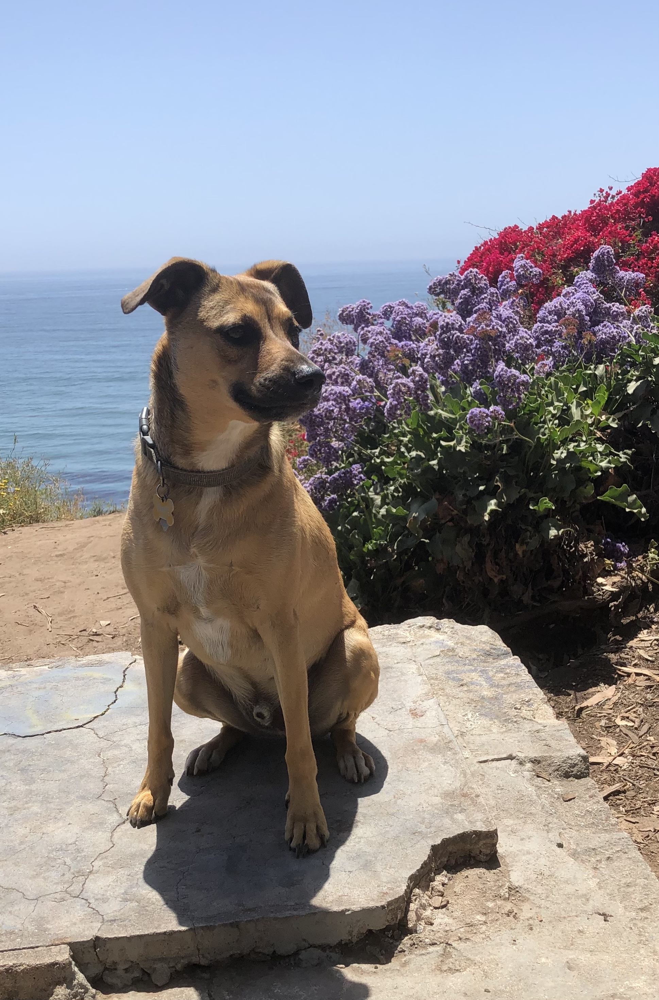
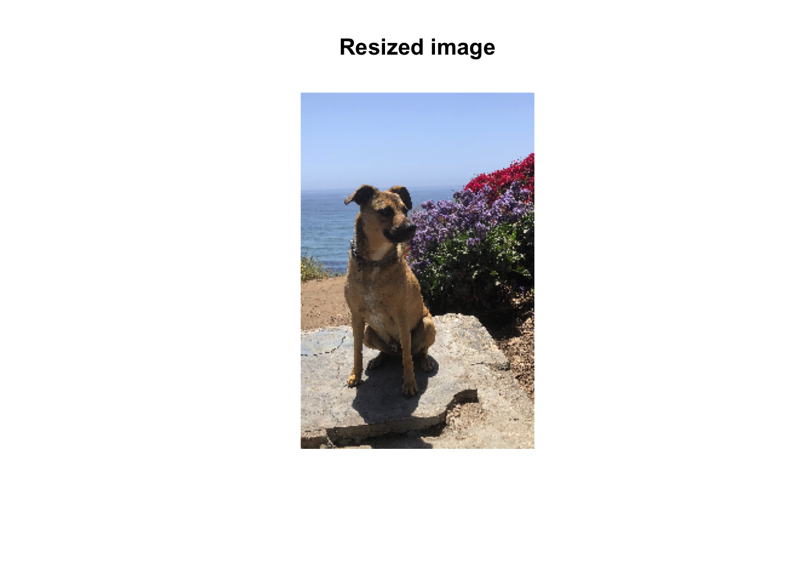
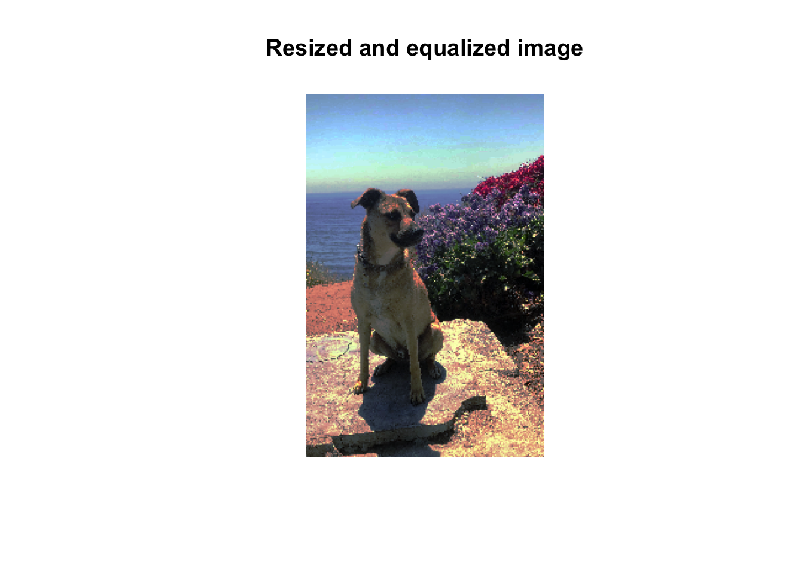
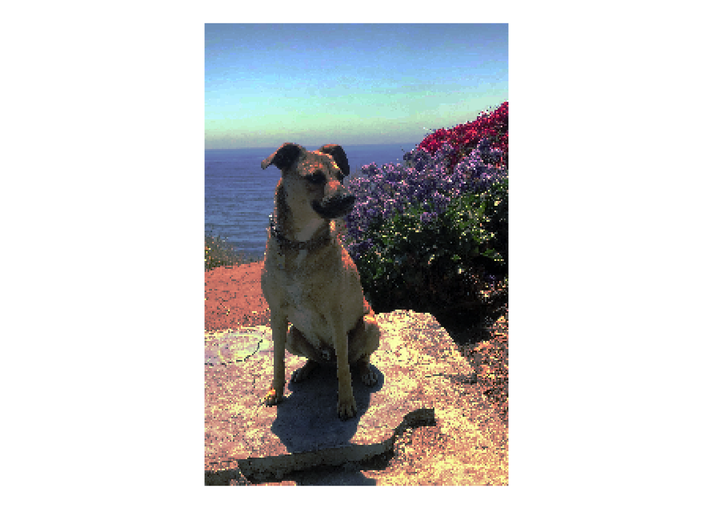
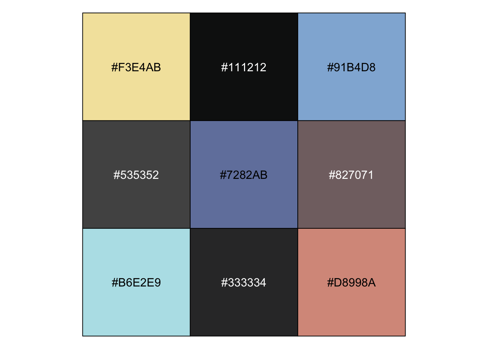
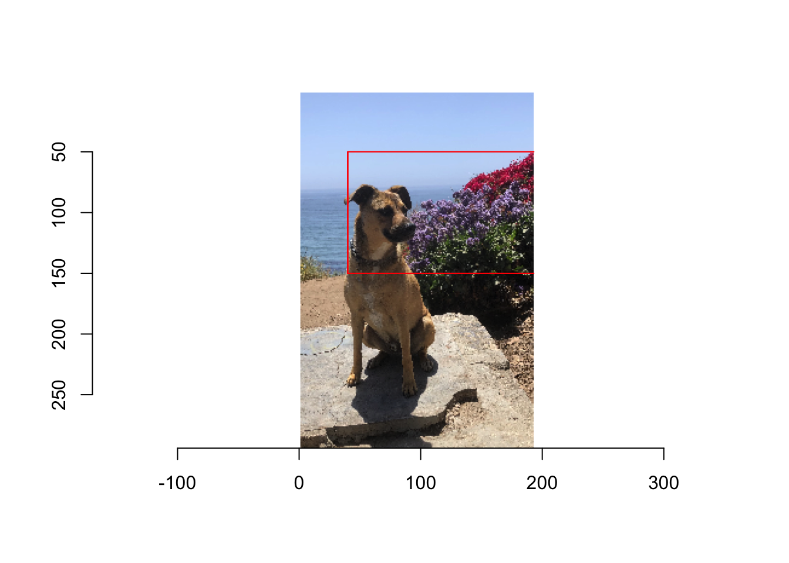
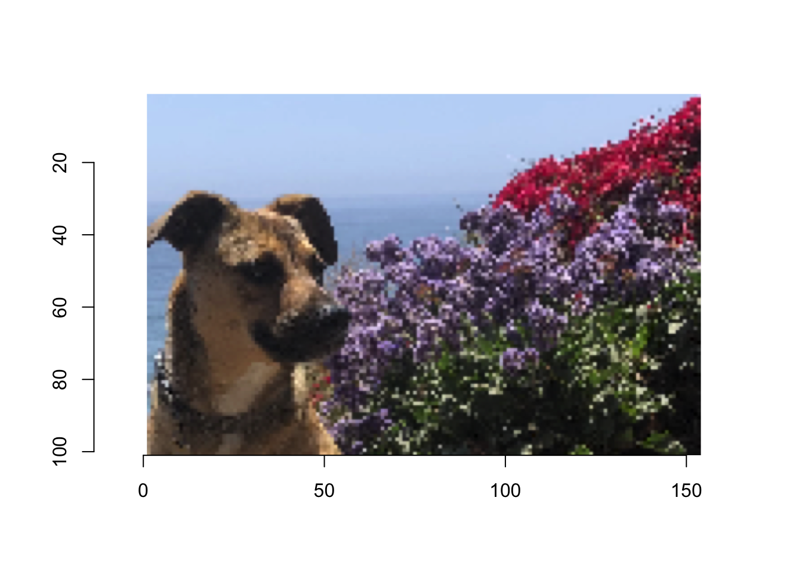
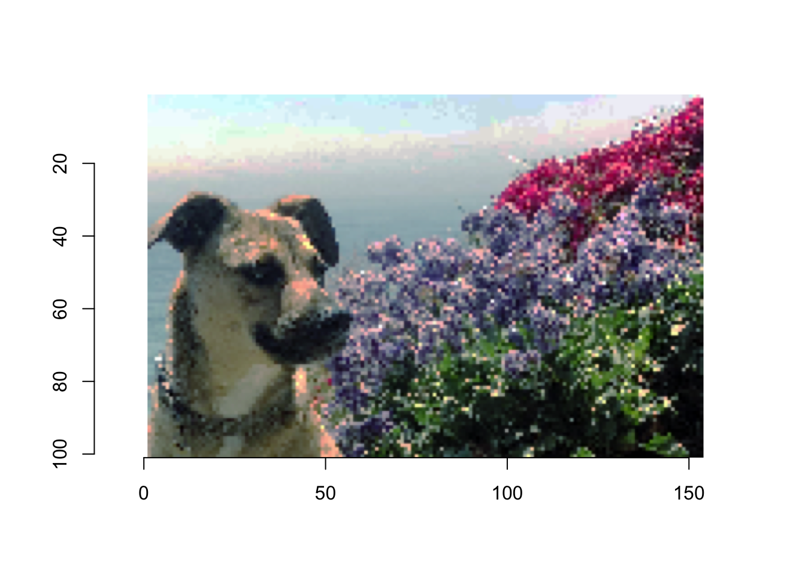
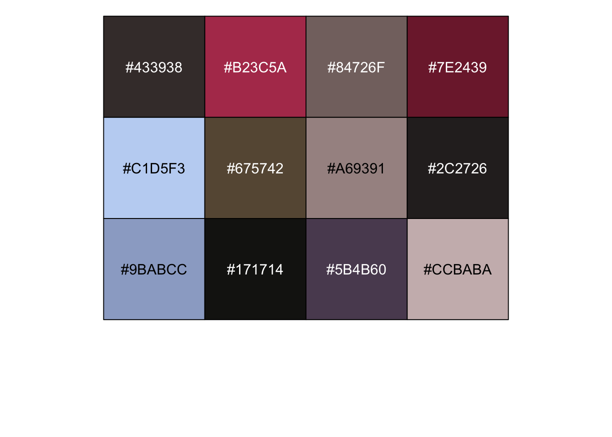
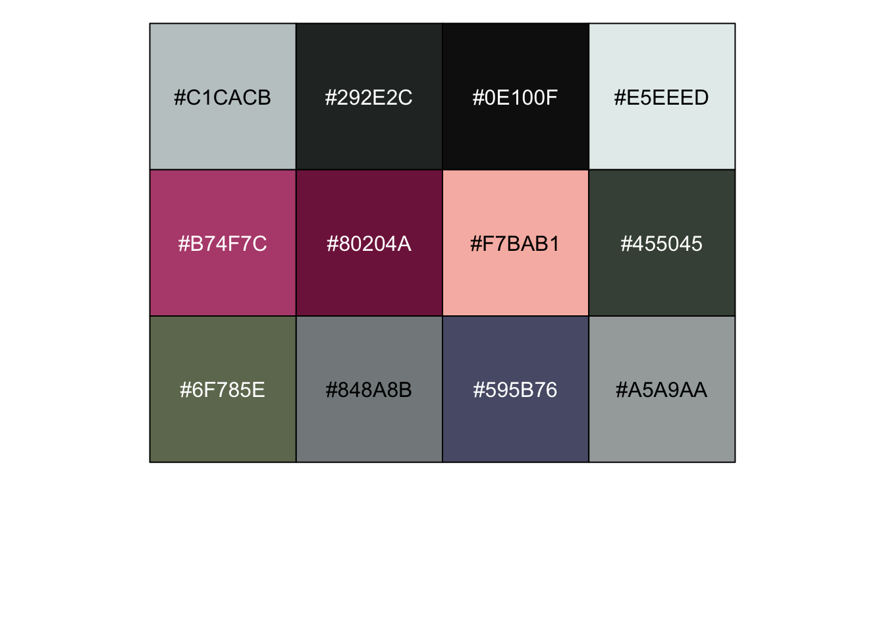

Code
library(imager)
library(factoextra)
library(tidyverse)
library(here)The idea here is to use K-means clustering to identify centroids in RGB space based on an image. By selecting different numbers of clusters, you can create palettes of different size.
This was (very roughly) inspired by the wesanderson and calecopal packages, and also cool image manipulation examples like https://www.r-bloggers.com/2022/10/probabilistic-photograph-manipulation-with-ggplot2-and-imager.
Once the base code is up and running, perhaps turn it into a Shiny app where users can load their own image and set up their own palettes.
library(imager)
library(factoextra)
library(tidyverse)
library(here)The first step is to load in an image, and convert it to a dataframe of x, y, r, g, b.
img_f <- here('img/waffle_douglas.jpg')
knitr::include_graphics(img_f)
Note: for a Shiny app, might be nice to have an option to downsample a really large image. We might also want to adjust the colors using histogram equalization.
img_full <- load.image(img_f)
img_dims <- dim(img_full)[1:2]
img <- img_full %>%
resize(size_x = -10, size_y = -10)
### given negative values, imager::resize interprets as percent of original image
### given positive, interprets as final pixel dimensions
plot(img, main = 'Resized image', axes = FALSE)
equalize_image <- function(img) {
### helper function to equalize one channel
hist_eq <- function(i) as.cimg(ecdf(i)(i), dim = dim(i))
### Split image across colour channels
cn <- imsplit(img, "c") ### we now have a list of images
cn_eq <- map_il(cn, hist_eq) #run hist_eq on each
img_eq <- imappend(cn_eq, "c")
return(img_eq)
}
img_eq <- equalize_image(img)
plot(img_eq, main = 'Resized and equalized image', axes = FALSE)
Convert the image to a dataframe with RGB values. Let’s use the equalized image for more vibrancy.
img_to_df <- function(img) {
color_names <- c('r', 'g', 'b')
img_df <- img %>%
as.data.frame() %>%
mutate(cc = color_names[cc]) %>%
pivot_wider(names_from = cc, values_from = value) %>%
mutate(hex = rgb(r, g, b))
return(img_df)
}
img_df <- img_to_df(img_eq)
ggplot(img_df, aes(x = x, y = -y, fill = hex)) +
geom_raster() +
scale_fill_identity() +
coord_fixed() +
theme_void()
Then run K-means clustering on the result. Grab the resulting centers, coerce to dataframe, mutate into hex codes, and return those hex codes as the resulting palette.
colors_df <- img_df %>%
select(r, g, b)
set.seed(42)
colors_k <- kmeans(colors_df, centers = 9, iter.max = 10, nstart = 5)
pal <- colors_k$centers %>%
as.data.frame() %>%
mutate(hex = rgb(r, g, b)) %>%
pull(hex)
scales::show_col(pal)
There is a lot of brown and blue here. What if we crop the image to the upper right corner?
Could use imsub to get a rectangular selection, or Xc/Yc. Let’s try imsub, recalling that our dimensions (for the low-res image) are 193 x 294 pixels.
Crop the photo, using the non-equalized version. For a Shiny app, would be cool to include an interactive selection tool to create a crop box.
x_keep <- c(40, 193)
y_keep <- c(50, 150)
img_crop <- imsub(img,
x %inr% x_keep,
y %inr% y_keep)
px <- (Xc(img) %inr% x_keep) & (Yc(img) %inr% y_keep)
plot(img)
highlight(px)
img_crop_eq <- equalize_image(img_crop)
plot(img_crop)
plot(img_crop_eq)
The unequalized cropped image seems more vibrant, actually… but let’s see what kind of palettes k-means clustering gives us for each!
First, for the cropped original image:
img_df <- img_to_df(img_crop)
colors_df <- img_df %>%
select(r, g, b)
set.seed(42)
colors_k <- kmeans(colors_df, centers = 12, iter.max = 10, nstart = 5)
pal <- colors_k$centers %>%
as.data.frame() %>%
mutate(hex = rgb(r, g, b)) %>%
pull(hex)
scales::show_col(pal)
Then for the cropped equalized image:
img_df <- img_to_df(img_crop_eq)
colors_df <- img_df %>%
select(r, g, b)
set.seed(42)
colors_k <- kmeans(colors_df, centers = 12, iter.max = 10, nstart = 5)
pal <- colors_k$centers %>%
as.data.frame() %>%
mutate(hex = rgb(r, g, b)) %>%
pull(hex)
scales::show_col(pal)